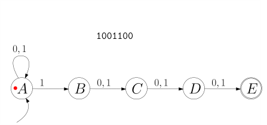
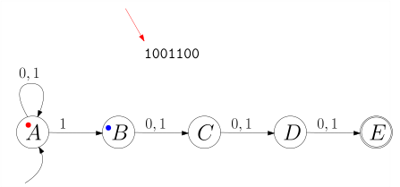
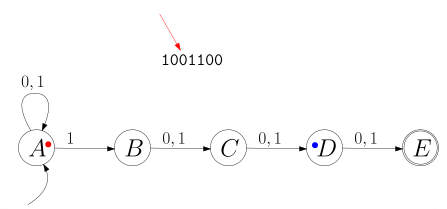

5.3 Nichtdeterministische Endliche Automaten./wly/05/03-nfsm.wly:2:11
Ein nichtdeterministischer Automat ist, informell./wly/05/03-nfsm.wly:4:5 ausgedrückt, wie ein deterministischer Automat, nur./wly/05/03-nfsm.wly:5:5 dass es für eine Zustand-Symbol-Kombination beliebig./wly/05/03-nfsm.wly:6:5 viele ausgehende Pfeile (eventuell gar keinen) geben./wly/05/03-nfsm.wly:7:5 kann. Hier ist das Beispiel von vorhin, leicht./wly/05/03-nfsm.wly:8:5 abgewandelt:./wly/05/03-nfsm.wly:9:5
 public/img/finite-state-automata/nfsm-example-01.svg
public/img/finite-state-automata/nfsm-example-01.svg
Ein Pfeil beschreibt also nicht unbedingt einen./wly/05/03-nfsm.wly:16:5 Zustandsübergang, der ./wly/05/03-nfsm.wly:17:5geschieht./wly/05/03-nfsm.wly:17:28,./wly/05/03-nfsm.wly:17:38 sondern einen, der./wly/05/03-nfsm.wly:17:38 ./wly/05/03-nfsm.wly:18:5möglich./wly/05/03-nfsm.wly:18:6 ist. Formal gesprochen ist ./wly/05/03-nfsm.wly:18:14$\delta$./wly/05/03-nfsm.wly:18:42 nun./wly/05/03-nfsm.wly:18:50 keine Funktion mehr, sondern eine ./wly/05/03-nfsm.wly:19:5Relation./wly/05/03-nfsm.wly:19:40:./wly/05/03-nfsm.wly:19:49
Definition 5.3.1 (Nichtdeterministischer endlicher Automat,./wly/05/03-nfsm.wly:21:5 non-deterministic finite state machine)./wly/05/03-nfsm.wly:23:9 Ein./wly/05/03-nfsm.wly:23:49 nichtdeterministischer endlicher Automat besteht aus./wly/05/03-nfsm.wly:24:9
-
einem endlichen Eingabealphaet ./wly/05/03-nfsm.wly:28:17$\Sigma$./wly/05/03-nfsm.wly:28:48,./wly/05/03-nfsm.wly:28:56
-
einer endlichen Menge ./wly/05/03-nfsm.wly:31:17$Q$./wly/05/03-nfsm.wly:31:39 von Zuständen,./wly/05/03-nfsm.wly:31:42
-
einem Startzustand ./wly/05/03-nfsm.wly:34:17$\qstart \in Q$./wly/05/03-nfsm.wly:34:36,./wly/05/03-nfsm.wly:34:51
-
einer Menge ./wly/05/03-nfsm.wly:37:17$F \subseteq Q$./wly/05/03-nfsm.wly:37:29 von akzeptierenden./wly/05/03-nfsm.wly:37:44 Endzuständen,./wly/05/03-nfsm.wly:38:17
-
einer Zustandsübergangsrelation./wly/05/03-nfsm.wly:41:17 ./wly/05/03-nfsm.wly:42:17$\delta \subseteq Q \times \Sigma \times Q$./wly/05/03-nfsm.wly:42:17 ../wly/05/03-nfsm.wly:42:60
Formal gesehen ist also ein Automat ein Quintupel./wly/05/03-nfsm.wly:44:9 ./wly/05/03-nfsm.wly:45:9$M = (\Sigma, Q, \qstart, F, \delta)$./wly/05/03-nfsm.wly:45:9../wly/05/03-nfsm.wly:45:46
Von nun an bezeichnen wir endliche Automaten auch als./wly/05/03-nfsm.wly:47:5 ./wly/05/03-nfsm.wly:48:5deterministische./wly/05/03-nfsm.wly:48:6 endliche Automaten, um den./wly/05/03-nfsm.wly:48:23 Unterschied zu den nichtdeterministischen zu./wly/05/03-nfsm.wly:49:5 verdeutlichen. Wenn in einem deterministischen./wly/05/03-nfsm.wly:50:5 endlichen Automaten ./wly/05/03-nfsm.wly:51:5$\delta(q,x) = q'$./wly/05/03-nfsm.wly:51:25 war, so hatte./wly/05/03-nfsm.wly:51:43 das die Bedeutung ./wly/05/03-nfsm.wly:52:5wenn der Automat im Zustand ./wly/05/03-nfsm.wly:52:24$q$./wly/05/03-nfsm.wly:52:52 ./wly/05/03-nfsm.wly:52:55 ist und ./wly/05/03-nfsm.wly:53:5$x$./wly/05/03-nfsm.wly:53:13 liest, so geht er in Zustand ./wly/05/03-nfsm.wly:53:16$q'$./wly/05/03-nfsm.wly:53:46 über./wly/05/03-nfsm.wly:53:50;./wly/05/03-nfsm.wly:53:56 ./wly/05/03-nfsm.wly:53:56 wenn nun in einem nichtdeterministischen Automaten./wly/05/03-nfsm.wly:54:5 ./wly/05/03-nfsm.wly:55:5$(q,x,q') \in \delta$./wly/05/03-nfsm.wly:55:5 gilt, so bedeutet das, ./wly/05/03-nfsm.wly:55:26wenn./wly/05/03-nfsm.wly:55:51 der Automat im Zustand ./wly/05/03-nfsm.wly:56:5$q$./wly/05/03-nfsm.wly:56:28 ist und ./wly/05/03-nfsm.wly:56:31$x$./wly/05/03-nfsm.wly:56:40 liest, so kann./wly/05/03-nfsm.wly:56:43 er in Zustand ./wly/05/03-nfsm.wly:57:5$q'$./wly/05/03-nfsm.wly:57:19 übergehen./wly/05/03-nfsm.wly:57:23../wly/05/03-nfsm.wly:57:34 Analog zu den./wly/05/03-nfsm.wly:57:34 deterministischen Automaten definieren wir eine./wly/05/03-nfsm.wly:58:5 erweiterte Zustandsübergangsrelation../wly/05/03-nfsm.wly:59:5
Definition 5.3.2 (Erweiterte Zuständsübergangsfunktion)./wly/05/03-nfsm.wly:61:5../wly/05/03-nfsm.wly:62:49 Für einen./wly/05/03-nfsm.wly:62:49 nichtdeterministischen endlichen Automaten./wly/05/03-nfsm.wly:63:9 ./wly/05/03-nfsm.wly:64:9$(\Sigma, Q, \qstart, F, \delta)$./wly/05/03-nfsm.wly:64:9 definieren wir die./wly/05/03-nfsm.wly:64:42 ./wly/05/03-nfsm.wly:65:9erweiterte Zustandsübergangsrelation./wly/05/03-nfsm.wly:65:10 ./wly/05/03-nfsm.wly:65:47 ./wly/05/03-nfsm.wly:66:9$\hat{\delta}\subseteq Q \times \Sigma^* \rightarrow Q$./wly/05/03-nfsm.wly:66:9 ./wly/05/03-nfsm.wly:67:11 als die Menge aller Zustand-Wort-Zustand-Tripel./wly/05/03-nfsm.wly:68:9 ./wly/05/03-nfsm.wly:69:9$(q,x_1 x_2 \dots x_n,q')$./wly/05/03-nfsm.wly:69:9,./wly/05/03-nfsm.wly:69:35 für die wir./wly/05/03-nfsm.wly:69:35 Zwischenzustände./wly/05/03-nfsm.wly:70:9 ./wly/05/03-nfsm.wly:71:9$q = \qstart, q_1, q_2, \dots, q_n = q'$./wly/05/03-nfsm.wly:71:9 finden./wly/05/03-nfsm.wly:71:49 können mit./wly/05/03-nfsm.wly:72:9
$$
(\qstart, x_1, q_1), (q_1,
x_2, q_2), \dots, (q_{n-1}, x_n, q_n) \in \delta
$$./wly/05/03-nfsm.wly:74:9
Dies schließt den Fall ./wly/05/03-nfsm.wly:79:9$n = 0$./wly/05/03-nfsm.wly:79:32 mit ein, also./wly/05/03-nfsm.wly:79:39 ./wly/05/03-nfsm.wly:80:9$(q, \epsilon, q) \in \hat{\delta}$./wly/05/03-nfsm.wly:80:9../wly/05/03-nfsm.wly:80:44 Wie zuvor./wly/05/03-nfsm.wly:80:44 schreiben wir ./wly/05/03-nfsm.wly:81:9$q \stackrel{\alpha}{\rightarrow} q'$./wly/05/03-nfsm.wly:81:23../wly/05/03-nfsm.wly:81:60 ./wly/05/03-nfsm.wly:81:60 Die von ./wly/05/03-nfsm.wly:82:9$M$./wly/05/03-nfsm.wly:82:17 akzeptierte Sprache ist./wly/05/03-nfsm.wly:82:20
$$
L(M) := \{\alpha \in
\Sigma^* \ | \ \textnormal{ es gibt ein } q \in F \textnormal{ mit }
\qstart \stackrel{\alpha}{\rightarrow} q \}
$$./wly/05/03-nfsm.wly:84:9
Beobachtung 5.3.3./wly/05/03-nfsm.wly:90:5 ./wly/05/03-nfsm.wly:90:5 Sei ./wly/05/03-nfsm.wly:91:9$M = (\Sigma, Q, \qstart, F, \delta)$./wly/05/03-nfsm.wly:91:13 ein./wly/05/03-nfsm.wly:91:50 nichtdeterministischer endlicher Automat. Dann gibt es./wly/05/03-nfsm.wly:92:9 eine reguläre Grammatik ./wly/05/03-nfsm.wly:93:9$G$./wly/05/03-nfsm.wly:93:33 mit ./wly/05/03-nfsm.wly:93:36$L(G) = L(M)$./wly/05/03-nfsm.wly:93:41../wly/05/03-nfsm.wly:93:54
Wir führen hier den Beweis nicht noch einmal; er ist./wly/05/03-nfsm.wly:95:5 mehr oder weniger identisch mit dem Beweis von ./wly/05/03-nfsm.wly:96:5Theorem 5.2.6; wir haben nämlich in jenem./wly/05/03-nfsm.wly:97:5 Beweis nirgends verwendet, dass ./wly/05/03-nfsm.wly:98:5$\delta$./wly/05/03-nfsm.wly:98:37 eine./wly/05/03-nfsm.wly:98:45 ./wly/05/03-nfsm.wly:99:5Funktion./wly/05/03-nfsm.wly:99:6 ist, und daher geht mit einem ./wly/05/03-nfsm.wly:99:15$\delta$./wly/05/03-nfsm.wly:99:46,./wly/05/03-nfsm.wly:99:54 ./wly/05/03-nfsm.wly:99:54 das eine ./wly/05/03-nfsm.wly:100:5Relation./wly/05/03-nfsm.wly:100:15 ist, alles ganz genau gleich../wly/05/03-nfsm.wly:100:24 Allerdings gilt nun auch der Umkehrschluss: zu einer./wly/05/03-nfsm.wly:101:5 regulären Grammatik gibt es einen./wly/05/03-nfsm.wly:102:5 nichtdeterministischen endlichen Automaten:./wly/05/03-nfsm.wly:103:5
Theorem 5.3.4./wly/05/03-nfsm.wly:105:5 ./wly/05/03-nfsm.wly:105:5 Sei ./wly/05/03-nfsm.wly:106:9$G = (\Sigma, N, P, S)$./wly/05/03-nfsm.wly:106:13 eine reguläre Grammatik../wly/05/03-nfsm.wly:106:36 Dann gibt es einen nichtdeterministischen endlichen./wly/05/03-nfsm.wly:107:9 Automaten ./wly/05/03-nfsm.wly:108:9$M$./wly/05/03-nfsm.wly:108:19 mit ./wly/05/03-nfsm.wly:108:22$L(G) = L(M)$./wly/05/03-nfsm.wly:108:27../wly/05/03-nfsm.wly:108:40
Beweis. Unser Automat hat als Zustandsmenge ./wly/05/03-nfsm.wly:111:9$N$./wly/05/03-nfsm.wly:111:45,./wly/05/03-nfsm.wly:111:48 die Menge./wly/05/03-nfsm.wly:111:48 der nichtterminalen Symbole und als Startzustand ./wly/05/03-nfsm.wly:112:9$S$./wly/05/03-nfsm.wly:112:58,./wly/05/03-nfsm.wly:112:61 ./wly/05/03-nfsm.wly:112:61 das Startsymbol der Grammatik ./wly/05/03-nfsm.wly:113:9$G$./wly/05/03-nfsm.wly:113:39../wly/05/03-nfsm.wly:113:42 Wir definieren./wly/05/03-nfsm.wly:113:42 ./wly/05/03-nfsm.wly:114:9$\delta$./wly/05/03-nfsm.wly:114:9,./wly/05/03-nfsm.wly:114:17 indem wir jeden ./wly/05/03-nfsm.wly:114:17$G$./wly/05/03-nfsm.wly:114:35 -Pfeil in einem./wly/05/03-nfsm.wly:114:38 ./wly/05/03-nfsm.wly:115:9$M$./wly/05/03-nfsm.wly:115:9-Pfeil./wly/05/03-nfsm.wly:115:12 umwandeln: eine Produktion./wly/05/03-nfsm.wly:115:12
$$
X
\rightarrow a Y
$$./wly/05/03-nfsm.wly:117:9
in ./wly/05/03-nfsm.wly:122:9$G$./wly/05/03-nfsm.wly:122:12 wird dann zu./wly/05/03-nfsm.wly:122:15
$$
(X, a, Y) \in \delta
$$./wly/05/03-nfsm.wly:124:9
also einem Pfeil ./wly/05/03-nfsm.wly:128:9$X \stackrel{a}{\rightarrow} Y$./wly/05/03-nfsm.wly:128:26 in./wly/05/03-nfsm.wly:128:57 ./wly/05/03-nfsm.wly:129:9$M$./wly/05/03-nfsm.wly:129:9../wly/05/03-nfsm.wly:129:12 Für jede Regel der Form ./wly/05/03-nfsm.wly:129:12$X \rightarrow \epsilon$./wly/05/03-nfsm.wly:129:38 ./wly/05/03-nfsm.wly:129:62 machen wir ./wly/05/03-nfsm.wly:130:9$X$./wly/05/03-nfsm.wly:130:20 zu einem Endzustand. Was aber mit./wly/05/03-nfsm.wly:130:23 Regeln der Form ./wly/05/03-nfsm.wly:131:9$X \rightarrow Y$./wly/05/03-nfsm.wly:131:25?./wly/05/03-nfsm.wly:131:42 Hierfür könnte man./wly/05/03-nfsm.wly:131:42 Nichtdeterministische Automaten mit ./wly/05/03-nfsm.wly:132:9$\epsilon$./wly/05/03-nfsm.wly:132:45 ./wly/05/03-nfsm.wly:132:55 -Übergängen definieren, die also vom Zustand ./wly/05/03-nfsm.wly:133:9$X$./wly/05/03-nfsm.wly:133:54 nach./wly/05/03-nfsm.wly:133:57 ./wly/05/03-nfsm.wly:134:9$Y$./wly/05/03-nfsm.wly:134:9 wechseln können, ohne ein Eingabesymbol zu lesen;./wly/05/03-nfsm.wly:134:12 wir gehen hier einen anderen Weg und verweisen auf./wly/05/03-nfsm.wly:135:9 ./wly/05/03-nfsm.wly:136:9Theorem 5.1.7, welches uns./wly/05/03-nfsm.wly:136:9 erlaubt, Regeln der Form ./wly/05/03-nfsm.wly:137:9$X \rightarrow Y$./wly/05/03-nfsm.wly:137:34 und./wly/05/03-nfsm.wly:137:51 ./wly/05/03-nfsm.wly:138:9$X \rightarrow a$./wly/05/03-nfsm.wly:138:9 zu eliminieren../wly/05/03-nfsm.wly:138:26A\(\square\)
Beispiel 5.3.5./wly/05/03-nfsm.wly:140:5 ./wly/05/03-nfsm.wly:140:5 Wir betrachten abermals die reguläre Grammatik aus./wly/05/03-nfsm.wly:141:9 dem vorherigen ./wly/05/03-nfsm.wly:142:9Kapitel 5.1.3:./wly/05/03-nfsm.wly:142:9
$$
\begin{align*}
S&\rightarrow \epsilon \ |\ a S \ | \ b T \\ T&
\rightarrow \epsilon \ | \ b T \
\end{align*}
$$./wly/05/03-nfsm.wly:144:9
und auch den (falschen) endlichen Automaten, den wir./wly/05/03-nfsm.wly:149:9 im letzten Kapitel dafür gebaut haben:./wly/05/03-nfsm.wly:150:9
 public/img/finite-state-automata/finite-state-machine-example-03.svg
public/img/finite-state-automata/finite-state-machine-example-03.svg
Wir sehen nun, dass dies genau der./wly/05/03-nfsm.wly:157:9 nichtdeterministische Automat ist, den wir nach./wly/05/03-nfsm.wly:158:9 Theorem >>#theorem-nfsm-regular bauen können. Die./wly/05/03-nfsm.wly:159:9 Zustandsübergangsrelation ./wly/05/03-nfsm.wly:160:9$\delta$./wly/05/03-nfsm.wly:160:35 ist./wly/05/03-nfsm.wly:160:43
$$
\delta
= \{(S,a,S), (S,b,S), (T,b,T) \} \ .
$$./wly/05/03-nfsm.wly:162:9
Jeder Zustand ist ein Endzustand, allerdings heißt./wly/05/03-nfsm.wly:167:9 das nicht, dass der Automat jedes Wort akzeptiert. Für./wly/05/03-nfsm.wly:168:9 ./wly/05/03-nfsm.wly:169:9$\alpha = ba$./wly/05/03-nfsm.wly:169:9 beispielsweise gibt es keinen Zustand./wly/05/03-nfsm.wly:169:22 ./wly/05/03-nfsm.wly:170:9$q$./wly/05/03-nfsm.wly:170:9 mit ./wly/05/03-nfsm.wly:170:12$S \stackrel{ba}{\rightarrow} q$./wly/05/03-nfsm.wly:170:17,./wly/05/03-nfsm.wly:170:49 geschweige./wly/05/03-nfsm.wly:170:49 denn einen akzeptierenden Endzustand. Daher gilt:./wly/05/03-nfsm.wly:171:9 ./wly/05/03-nfsm.wly:172:9$ba \not \in L(M)$./wly/05/03-nfsm.wly:172:9../wly/05/03-nfsm.wly:172:27
Beispiel 5.3.6./wly/05/03-nfsm.wly:174:5 ./wly/05/03-nfsm.wly:174:5 Wir betrachten die reguläre Grammatik aus./wly/05/03-nfsm.wly:175:9 ./wly/05/03-nfsm.wly:176:9Übungsaufgabe 5.1.7:./wly/05/03-nfsm.wly:176:9
$$
\begin{align*}
S&\rightarrow A \ | \ B \\ A&\rightarrow \epsilon \
| \ b A \ | \ c A \\ B&\rightarrow \epsilon \ | \ a B \ | \ c B
\end{align*}
$$./wly/05/03-nfsm.wly:178:9
Bevor wir einen nichtdeterministischen Automaten./wly/05/03-nfsm.wly:183:9 bauen können, müssen wir erst die Produktionen der./wly/05/03-nfsm.wly:184:9 Form ./wly/05/03-nfsm.wly:185:9$X \rightarrow Y$./wly/05/03-nfsm.wly:185:14 eliminieren bzw. ersetzen../wly/05/03-nfsm.wly:185:31 Wenn Sie Aufgabe 4.1.7 gelöst haben, haben Sie./wly/05/03-nfsm.wly:186:9 wahrscheinlich in etwa folgende Grammatik erhalten:./wly/05/03-nfsm.wly:187:9
$$
\begin{align*}
S&\rightarrow \epsilon \ | \ bA \ | \ cA \ | \ aB \ |
cB\\ A&\rightarrow \epsilon \ | \ bA \ | \ cA \\ B&\rightarrow
\epsilon \ | \ aB \ | \ cB
\end{align*}
$$./wly/05/03-nfsm.wly:189:9
Also insgesamt 11 statt 8 Produktionen. Alle./wly/05/03-nfsm.wly:195:9 Nichtterminale erlauben auf ihrer rechten Seite ein./wly/05/03-nfsm.wly:196:9 ./wly/05/03-nfsm.wly:197:9$\epsilon$./wly/05/03-nfsm.wly:197:9 und werden so zu akzeptierenden Zuständen../wly/05/03-nfsm.wly:197:19 Die Zustandsübergangsrelation ./wly/05/03-nfsm.wly:198:9$\delta$./wly/05/03-nfsm.wly:198:39 ist also./wly/05/03-nfsm.wly:198:47
$$
\begin{align*}
\delta&
= \{(S,b,A), (S,c,A), (S,a,B), (S,c,B), (A,b,A), (A,c,A), (B,a,B),
(B,c,B)\}
\end{align*}
$$./wly/05/03-nfsm.wly:200:9
Der nichtdeterminische Automat schaut also so aus:./wly/05/03-nfsm.wly:206:9
 public/img/finite-state-automata/nfsm-example-02.svg
public/img/finite-state-automata/nfsm-example-02.svg
Übungsaufgabe 5.3.1./wly/05/03-nfsm.wly:213:5 ./wly/05/03-nfsm.wly:213:5 Sei ./wly/05/03-nfsm.wly:215:9$\Sigma = \{1\}$./wly/05/03-nfsm.wly:215:13 und./wly/05/03-nfsm.wly:215:29 ./wly/05/03-nfsm.wly:216:9\(L_k := \{1^n \ | \textnormal{ $n$ ist durch $k$ teilbar}\}\)./wly/05/03-nfsm.wly:216:9 ./wly/05/03-nfsm.wly:217:21 . Schreiben Sie für ./wly/05/03-nfsm.wly:218:9$L_k$./wly/05/03-nfsm.wly:218:29 einen deterministischen./wly/05/03-nfsm.wly:218:34 endlichen Automaten. Schreiben Sie eine reguläre./wly/05/03-nfsm.wly:219:9 Grammatik für die Sprache ./wly/05/03-nfsm.wly:220:9$L_5 \cup L_7$./wly/05/03-nfsm.wly:220:35,./wly/05/03-nfsm.wly:220:49 also die./wly/05/03-nfsm.wly:220:49 Strings aus 1, deren Länge durch 5 oder durch 7./wly/05/03-nfsm.wly:221:9 teilbar ist. Zeichnen Sie nun einen./wly/05/03-nfsm.wly:222:9 nichtdeterministischen endlichen Automaten für./wly/05/03-nfsm.wly:223:9 ./wly/05/03-nfsm.wly:224:9$L_5 \cup L_7$./wly/05/03-nfsm.wly:224:9../wly/05/03-nfsm.wly:224:23
Nichtdeterministische endliche Automaten./wly/05/03-nfsm.wly:227:9 deterministisch machen./wly/05/03-nfsm.wly:228:9
Wir werden nun zeigen, dass man zu jedem./wly/05/03-nfsm.wly:230:5 nichtdeterministischen Automaten ./wly/05/03-nfsm.wly:231:5$M$./wly/05/03-nfsm.wly:231:38 einen./wly/05/03-nfsm.wly:231:41 äquivalenten deterministischen Automaten ./wly/05/03-nfsm.wly:232:5$M'$./wly/05/03-nfsm.wly:232:46 bauen./wly/05/03-nfsm.wly:232:50 kann. Bevor wir eine allgemeine Konstruktion zeigen,./wly/05/03-nfsm.wly:233:5 fragen wir uns, wie wir beispielsweise für den./wly/05/03-nfsm.wly:234:5 nichtdeterministischen endlichen Automaten ./wly/05/03-nfsm.wly:235:5$M$./wly/05/03-nfsm.wly:235:48:./wly/05/03-nfsm.wly:235:51
public/img/finite-state-automata/nfsm-example-01.svg
und das Eingabewort ./wly/05/03-nfsm.wly:242:5$\alpha = 1001100$./wly/05/03-nfsm.wly:242:25 überprüfen./wly/05/03-nfsm.wly:242:43 können, ob ./wly/05/03-nfsm.wly:243:5$1001100 \in L(M)$./wly/05/03-nfsm.wly:243:16 gilt. Einem./wly/05/03-nfsm.wly:243:34 determinischen endlichen Automaten können wir ja das./wly/05/03-nfsm.wly:244:5 Eingabewort einfach füttern und schauen, was der./wly/05/03-nfsm.wly:245:5 Automat tut; bei nichtdeterministischen Automaten./wly/05/03-nfsm.wly:246:5 müssen wir schauen, was er alles tun könnte. Wir./wly/05/03-nfsm.wly:247:5 plazieren einen kleinen farbigen Punkt in jeden./wly/05/03-nfsm.wly:248:5 Zustand, in dem sich der Automat befinden könnte; am./wly/05/03-nfsm.wly:249:5 Anfang hat der Startzustand ./wly/05/03-nfsm.wly:250:5$A$./wly/05/03-nfsm.wly:250:33 einen roten Punkt../wly/05/03-nfsm.wly:250:36
public/img/finite-state-automata/nfsm-colored-balls-01.svg
public/img/finite-state-automata/nfsm-colored-balls-02.svg
 public/img/finite-state-automata/nfsm-colored-balls-03.svg
public/img/finite-state-automata/nfsm-colored-balls-03.svg
public/img/finite-state-automata/nfsm-colored-balls-04.svg
 public/img/finite-state-automata/nfsm-colored-balls-05.svg
public/img/finite-state-automata/nfsm-colored-balls-05.svg
 public/img/finite-state-automata/nfsm-colored-balls-06.svg
public/img/finite-state-automata/nfsm-colored-balls-06.svg
 public/img/finite-state-automata/nfsm-colored-balls-07.svg
public/img/finite-state-automata/nfsm-colored-balls-07.svg
 public/img/finite-state-automata/nfsm-colored-balls-08.svg
public/img/finite-state-automata/nfsm-colored-balls-08.svg
 public/img/finite-state-automata/nfsm-colored-balls-09.svg
public/img/finite-state-automata/nfsm-colored-balls-09.svg
public/img/finite-state-automata/nfsm-colored-balls-10.svg
 public/img/finite-state-automata/nfsm-colored-balls-11.svg
public/img/finite-state-automata/nfsm-colored-balls-11.svg
 public/img/finite-state-automata/nfsm-colored-balls-12.svg
public/img/finite-state-automata/nfsm-colored-balls-12.svg
 public/img/finite-state-automata/nfsm-colored-balls-13.svg
public/img/finite-state-automata/nfsm-colored-balls-13.svg
 public/img/finite-state-automata/nfsm-colored-balls-14.svg
public/img/finite-state-automata/nfsm-colored-balls-14.svg
 public/img/finite-state-automata/nfsm-colored-balls-15.svg
public/img/finite-state-automata/nfsm-colored-balls-15.svg
public/img/finite-state-automata/nfsm-colored-balls-16.svg
 public/img/finite-state-automata/nfsm-colored-balls-17.svg
public/img/finite-state-automata/nfsm-colored-balls-17.svg
 public/img/finite-state-automata/nfsm-colored-balls-18.svg
public/img/finite-state-automata/nfsm-colored-balls-18.svg
public/img/finite-state-automata/nfsm-colored-balls-19.svg
 public/img/finite-state-automata/nfsm-colored-balls-20.svg
public/img/finite-state-automata/nfsm-colored-balls-20.svg
 public/img/finite-state-automata/nfsm-colored-balls-21.svg
public/img/finite-state-automata/nfsm-colored-balls-21.svg
 public/img/finite-state-automata/nfsm-colored-balls-22.svg
public/img/finite-state-automata/nfsm-colored-balls-22.svg
Am Ende landet der grüne Punkt im Zustand ./wly/05/03-nfsm.wly:276:5$E$./wly/05/03-nfsm.wly:276:47../wly/05/03-nfsm.wly:276:50 Das./wly/05/03-nfsm.wly:276:50 Wort ist also in ./wly/05/03-nfsm.wly:277:5$L(M)$./wly/05/03-nfsm.wly:277:22../wly/05/03-nfsm.wly:277:28 Das können wir auch ganz./wly/05/03-nfsm.wly:277:28 allgemein tun. Wenn Zustand ./wly/05/03-nfsm.wly:278:5$q$./wly/05/03-nfsm.wly:278:33 einen "Punkt" hat und./wly/05/03-nfsm.wly:278:36 Zeichen ./wly/05/03-nfsm.wly:279:5$x$./wly/05/03-nfsm.wly:279:13 gelesen wird, dann teilt sich dieser./wly/05/03-nfsm.wly:279:16 Punkt und plaziert einen Kind-Punkt in jedem Zustand./wly/05/03-nfsm.wly:280:5 ./wly/05/03-nfsm.wly:281:5$q'$./wly/05/03-nfsm.wly:281:5,./wly/05/03-nfsm.wly:281:9 für den ./wly/05/03-nfsm.wly:281:9$q \stackrel{x}{\rightarrow} q'$./wly/05/03-nfsm.wly:281:19 gilt../wly/05/03-nfsm.wly:281:51 Formal gesprochen: für eine Menge ./wly/05/03-nfsm.wly:282:5$R \subseteq Q$./wly/05/03-nfsm.wly:282:39 von./wly/05/03-nfsm.wly:282:54 Zuständen (die, die gerade einen "Punkt" haben) und./wly/05/03-nfsm.wly:283:5 ein Eingabe-Symbol ./wly/05/03-nfsm.wly:284:5$x$./wly/05/03-nfsm.wly:284:24 definieren wir./wly/05/03-nfsm.wly:284:27
$$
\begin{align*}
\Delta(R, x) := \{q' \in Q \ | \ \textnormal{ es gibt }
q \in R \textnormal{ mit } q \step{x} q'\}
\end{align*}
$$./wly/05/03-nfsm.wly:286:5
Für ein Eingabewort ./wly/05/03-nfsm.wly:291:5$\alpha= x_1 \dots x_n$./wly/05/03-nfsm.wly:291:25 fangen./wly/05/03-nfsm.wly:291:48 wir nun mit ./wly/05/03-nfsm.wly:292:5$R_0 = \{\qstart\}$./wly/05/03-nfsm.wly:292:17 an, das entspricht./wly/05/03-nfsm.wly:292:36 dem einen roten Punkt auf dem Startzustand, und./wly/05/03-nfsm.wly:293:5 berechnen dann jeweils ./wly/05/03-nfsm.wly:294:5$R_i = \Delta(R_{i-1}, x_i)$./wly/05/03-nfsm.wly:294:28;./wly/05/03-nfsm.wly:294:56 ./wly/05/03-nfsm.wly:294:56 wenn die Menge ./wly/05/03-nfsm.wly:295:5$R_n$./wly/05/03-nfsm.wly:295:20 einen akzeptierenden Endzustand./wly/05/03-nfsm.wly:295:25 enthält (dieser also am Ende einen "Punkt" hat), gilt./wly/05/03-nfsm.wly:296:5 ./wly/05/03-nfsm.wly:297:5$\alpha \in L(M)$./wly/05/03-nfsm.wly:297:5../wly/05/03-nfsm.wly:297:22 Treten Sie einen Schritt zurück./wly/05/03-nfsm.wly:297:22 und betrachten, was wir mit ./wly/05/03-nfsm.wly:298:5$\Delta$./wly/05/03-nfsm.wly:298:33 definiert haben:./wly/05/03-nfsm.wly:298:41 wir haben eine Zustandsübergangsfunktion definiert,./wly/05/03-nfsm.wly:299:5 die nun aber nicht auf Zuständen sondern auf./wly/05/03-nfsm.wly:300:5 ./wly/05/03-nfsm.wly:301:5Zustands./wly/05/03-nfsm.wly:301:5mengen./wly/05/03-nfsm.wly:301:14 operiert. Das heißt, im Gegensatz zu./wly/05/03-nfsm.wly:301:21 ./wly/05/03-nfsm.wly:302:5$\delta$./wly/05/03-nfsm.wly:302:5,./wly/05/03-nfsm.wly:302:13 das eine Funktion./wly/05/03-nfsm.wly:302:13 ./wly/05/03-nfsm.wly:303:5$\delta: Q \times \Sigma \rightarrow Q$./wly/05/03-nfsm.wly:303:5 ist, ist./wly/05/03-nfsm.wly:303:44
$$
\begin{align*}
\Delta: 2^Q \times \Sigma \rightarrow 2^Q \ .
\end{align*}
$$./wly/05/03-nfsm.wly:305:5
Wenn Sie die Schreibweise ./wly/05/03-nfsm.wly:309:5$2^Q$./wly/05/03-nfsm.wly:309:31 nicht kennen: dies./wly/05/03-nfsm.wly:309:36 ist die Potenzmenge von ./wly/05/03-nfsm.wly:310:5$Q$./wly/05/03-nfsm.wly:310:29,./wly/05/03-nfsm.wly:310:32 also die Menge aller./wly/05/03-nfsm.wly:310:32 Untermengen, was die leere Menge ./wly/05/03-nfsm.wly:311:5$\emptyset$./wly/05/03-nfsm.wly:311:38 und die./wly/05/03-nfsm.wly:311:49 "volle Menge" ./wly/05/03-nfsm.wly:312:5$Q$./wly/05/03-nfsm.wly:312:19 selbst miteinschließt. Wir haben./wly/05/03-nfsm.wly:312:22 also folgendes Theorem:./wly/05/03-nfsm.wly:313:5
Theorem 5.3.7 (Einen nichtdeterministischen endlichen Automaten./wly/05/03-nfsm.wly:315:5 deterministisch machen)../wly/05/03-nfsm.wly:318:9 Sei./wly/05/03-nfsm.wly:318:34 ./wly/05/03-nfsm.wly:319:9$M = (\Sigma, Q, \qstart, F, \delta)$./wly/05/03-nfsm.wly:319:9 ein./wly/05/03-nfsm.wly:319:46 nichtdeterministischer Automat; dann heiße der./wly/05/03-nfsm.wly:320:9 deterministische Automat./wly/05/03-nfsm.wly:321:9 ./wly/05/03-nfsm.wly:322:9$M' = (\Sigma, 2^Q, \{\qstart\}, \mathcal{F}, \Delta)$./wly/05/03-nfsm.wly:322:9 ./wly/05/03-nfsm.wly:323:17 mit Endzustandsmenge ./wly/05/03-nfsm.wly:324:9$\mathcal{F}$./wly/05/03-nfsm.wly:324:30 definiert als./wly/05/03-nfsm.wly:324:43
$$
\begin{align*}
\mathcal{F} := \{X
\subseteq Q \ | \ X \cap F \ne \emptyset\}
\end{align*}
$$./wly/05/03-nfsm.wly:326:9
und Zustandsübergangsfunktion ./wly/05/03-nfsm.wly:331:9$\Delta$./wly/05/03-nfsm.wly:331:39 definiert als./wly/05/03-nfsm.wly:331:47
$$
\begin{align*}
\Delta : \quad&2^Q \times \Sigma \rightarrow 2^Q \\&(R, x) \mapsto
\{q' \in Q \ | \ \textnormal{ es gibt } \ q \in R \textnormal{ mit } q
\step{x} q'\}
\end{align*}
$$./wly/05/03-nfsm.wly:333:9
der ./wly/05/03-nfsm.wly:339:9Potenzmengenautomat./wly/05/03-nfsm.wly:339:14../wly/05/03-nfsm.wly:339:34 Es gilt ./wly/05/03-nfsm.wly:339:34$L(M) = L(M')$./wly/05/03-nfsm.wly:339:44../wly/05/03-nfsm.wly:339:58
Wir folgern also./wly/05/03-nfsm.wly:341:5
Theorem 5.3.8./wly/05/03-nfsm.wly:343:5 ./wly/05/03-nfsm.wly:343:5 Zu jeder regulären Sprache ./wly/05/03-nfsm.wly:345:9$L$./wly/05/03-nfsm.wly:345:36 gibt es einen./wly/05/03-nfsm.wly:345:39 deterministischen endlichen Automaten ./wly/05/03-nfsm.wly:346:9$M$./wly/05/03-nfsm.wly:346:47 mit./wly/05/03-nfsm.wly:346:50 ./wly/05/03-nfsm.wly:347:9$L(M) = L$./wly/05/03-nfsm.wly:347:9../wly/05/03-nfsm.wly:347:19
Beispiel 5.3.9./wly/05/03-nfsm.wly:349:5 ./wly/05/03-nfsm.wly:349:5 Der obige nichtdeterminische Automaten ./wly/05/03-nfsm.wly:350:9$M$./wly/05/03-nfsm.wly:350:48,./wly/05/03-nfsm.wly:350:51 der die./wly/05/03-nfsm.wly:350:51 Sprache aller Wörter, deren viertletztes Zeichen eine./wly/05/03-nfsm.wly:351:9 1 ist, akzeptiert, hat fünf Zustände. Sein./wly/05/03-nfsm.wly:352:9 Potenzmengenautomat ./wly/05/03-nfsm.wly:353:9$M'$./wly/05/03-nfsm.wly:353:29 hätte also ./wly/05/03-nfsm.wly:353:33$2^5 = 32$./wly/05/03-nfsm.wly:353:45../wly/05/03-nfsm.wly:353:55 ./wly/05/03-nfsm.wly:353:55 Allerdings sehen wir, dass alle "relevanten" Zustände./wly/05/03-nfsm.wly:354:9 von ./wly/05/03-nfsm.wly:355:9$M$./wly/05/03-nfsm.wly:355:13 den Zustand ./wly/05/03-nfsm.wly:355:16$A$./wly/05/03-nfsm.wly:355:29 enthalten. Dieser wird nie./wly/05/03-nfsm.wly:355:32 verschwinden. Also sehen wir, dass man ./wly/05/03-nfsm.wly:356:9$M'$./wly/05/03-nfsm.wly:356:48 mit 16./wly/05/03-nfsm.wly:356:52 Zuständen implementieren kann (die anderen, die, die./wly/05/03-nfsm.wly:357:9 nicht ./wly/05/03-nfsm.wly:358:9$A$./wly/05/03-nfsm.wly:358:15 enthalten, sind ./wly/05/03-nfsm.wly:358:18unerreichbar./wly/05/03-nfsm.wly:358:36)../wly/05/03-nfsm.wly:358:49 Da 16./wly/05/03-nfsm.wly:358:49 immer noch recht groß für eine Abbildung ist, nehmen./wly/05/03-nfsm.wly:359:9 wir uns die Sprache aller Wörter, deren ./wly/05/03-nfsm.wly:360:9drittletztes./wly/05/03-nfsm.wly:360:50 Zeichen./wly/05/03-nfsm.wly:361:9 eine 1 ist. Der nichtdeterministische Automat./wly/05/03-nfsm.wly:361:17 hierfür ist./wly/05/03-nfsm.wly:362:9
 public/img/finite-state-automata/nfsm-example-04-third-from-right.svg
public/img/finite-state-automata/nfsm-example-04-third-from-right.svg
Der Potenzmengenautomat hat die Zustandsmenge./wly/05/03-nfsm.wly:369:9
$$
\begin{align*}
\{ \emptyset, A, B, C, D, AB, AC, AD, BC, BD, CD, ABC, ABD, ACD, BCD, ABCD \}
\end{align*}
$$./wly/05/03-nfsm.wly:371:9
wobei wir der Lesbarkeit halber
./wly/05/03-nfsm.wly:375:9\{A,B\}./wly/05/03-nfsm.wly:375:42
etc../wly/05/03-nfsm.wly:375:50
schreiben. Um bei der Konstruktion des./wly/05/03-nfsm.wly:376:9
Potenzmengenautomaten unnötige Zustände zu vermeiden,./wly/05/03-nfsm.wly:377:9
bauen wir ihn Schritt für Schritt, angefangen mit dem./wly/05/03-nfsm.wly:378:9
Startzustand \{A\} bzw.
./wly/05/03-nfsm.wly:379:9$A$./wly/05/03-nfsm.wly:379:33,./wly/05/03-nfsm.wly:379:36
und hängen jedem Zustand./wly/05/03-nfsm.wly:379:36
einen ausgehenden
./wly/05/03-nfsm.wly:380:9$0$./wly/05/03-nfsm.wly:380:27
-Pfeil und
./wly/05/03-nfsm.wly:380:30$1$./wly/05/03-nfsm.wly:380:42-Pfeil./wly/05/03-nfsm.wly:380:45
an, wobei./wly/05/03-nfsm.wly:380:45
wir womöglich neue Zustände "entdecken"../wly/05/03-nfsm.wly:381:9
 public/img/finite-state-automata/potenzmengenautomat/01.svg
public/img/finite-state-automata/potenzmengenautomat/01.svg
public/img/finite-state-automata/potenzmengenautomat/02.svg
public/img/finite-state-automata/potenzmengenautomat/03.svg
public/img/finite-state-automata/potenzmengenautomat/04.svg
public/img/finite-state-automata/potenzmengenautomat/05.svg
public/img/finite-state-automata/potenzmengenautomat/06.svg
public/img/finite-state-automata/potenzmengenautomat/07.svg
public/img/finite-state-automata/potenzmengenautomat/08.svg
public/img/finite-state-automata/potenzmengenautomat/09.svg
 public/img/finite-state-automata/potenzmengenautomat/10.svg
public/img/finite-state-automata/potenzmengenautomat/10.svg
 public/img/finite-state-automata/potenzmengenautomat/11.svg
public/img/finite-state-automata/potenzmengenautomat/11.svg
public/img/finite-state-automata/potenzmengenautomat/12.svg
 public/img/finite-state-automata/potenzmengenautomat/13.svg
public/img/finite-state-automata/potenzmengenautomat/13.svg
 public/img/finite-state-automata/potenzmengenautomat/14.svg
public/img/finite-state-automata/potenzmengenautomat/14.svg
 public/img/finite-state-automata/potenzmengenautomat/15.svg
public/img/finite-state-automata/potenzmengenautomat/15.svg
public/img/finite-state-automata/potenzmengenautomat/16.svg
 public/img/finite-state-automata/potenzmengenautomat/17.svg
public/img/finite-state-automata/potenzmengenautomat/17.svg
Wenn wir uns vorstellen, dass wir vor das Eingabewort./wly/05/03-nfsm.wly:402:9 ./wly/05/03-nfsm.wly:403:9$\alpha$./wly/05/03-nfsm.wly:403:9 die Zeichen 000 stellen, also ./wly/05/03-nfsm.wly:403:17$\alpha$./wly/05/03-nfsm.wly:403:48 durch./wly/05/03-nfsm.wly:403:56 ./wly/05/03-nfsm.wly:404:9$000\alpha$./wly/05/03-nfsm.wly:404:9 ersetzen, dann codiert jeder Zustand./wly/05/03-nfsm.wly:404:20 genau die letzten drei Zeichen des Eingabewortes, die./wly/05/03-nfsm.wly:405:9 der Automat gelesen hat. Der Zustand ./wly/05/03-nfsm.wly:406:9$ACD$./wly/05/03-nfsm.wly:406:46 bedeutet./wly/05/03-nfsm.wly:406:51 zum Beispiel ./wly/05/03-nfsm.wly:407:9die letzten drei Zeichen waren ./wly/05/03-nfsm.wly:407:23$110$./wly/05/03-nfsm.wly:407:54../wly/05/03-nfsm.wly:407:60
Im folgenden Unterkapitel werden wir alle./wly/05/03-nfsm.wly:409:5 Transformationen, die wir bisher gesehen haben, an./wly/05/03-nfsm.wly:410:5 einem konkreten Beispiel anwenden../wly/05/03-nfsm.wly:411:5